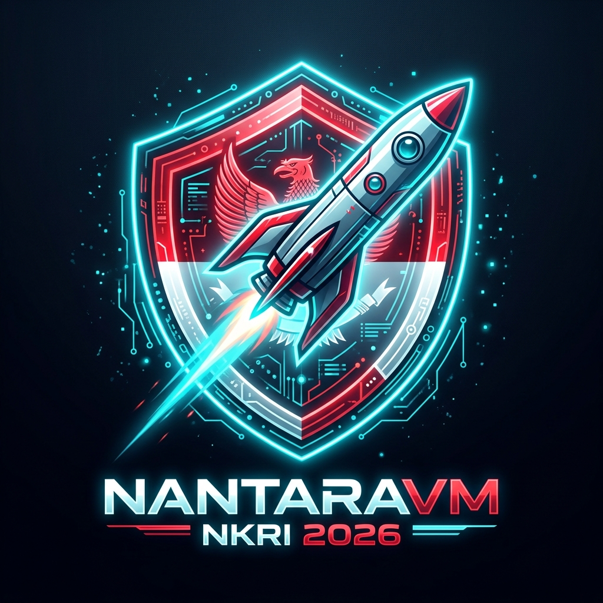

NantaraVM adalah proyek open-source ambisius untuk membangun MicroVM Hypervisor berbasis Rust yang aman, cepat, dan berdaulat di atas Linux KVM.
Setiap komponen diuji dan diverifikasi secara nyata di atas Hardware KVM Linux.
✅ Verified Real KVM (v0.1 Core):
/dev/kvm via kvm-ioctlsvm-memory✅ Verified Enterprise (v1.0 Features):
vmlinux & UEFI OVMF Bootingvirtio-blk) Queue Storage (--drive)virtio-net) TAP Interface (--net)NantaraVM hadir dalam edisi Gratis Open Source untuk komunitas dan Edisi Enterprise Pro untuk Klien & Perusahaan.
Desain modular berbasis Rust yang mengikuti pola hypervisor production seperti Firecracker & Cloud Hypervisor.
Wrapper Rust untuk Linux KVM ioctl. Alokasi guest RAM via mmap, create VM FD, dan vCPU management menggunakan library kvm-ioctls.
Status: ✅ Selesai & Terverifikasi (/dev/kvm)
Abstraksi perangkat VirtIO via MMIO transport. Termasuk VirtioBlock (--drive), VirtioNet (--net), dan VirtioGpu (--display) dengan interface bersih.
Status: ✅ Selesai & Terverifikasi (v0.1.2)
Isolasi proses dengan Linux namespaces, Landlock LSM, dan Seccomp BPF. Mengikuti pola Firecracker Jailer untuk keamanan multi-layer.
Status: ✅ Selesai & Terverifikasi (--jail)
API server untuk kontrol lifecycle VM: status, start, stop. Mendukung koneksi TCP port 8080 agar diakses dari web dashboard live.
Status: ✅ Selesai & Aktif di Port 8080 (TCP)
Dukungan AMD SEV-SNP dan Intel TDX untuk enkripsi memori hardware via src/sev/mod.rs dan attestation report.
Status: ✅ Selesai & Terverifikasi (v1.0)
Antarmuka containerd-shim-v2 untuk integrasi Kubernetes. Memungkinkan container berjalan di dalam MicroVM yang terisolasi.
Status: ✅ Selesai & Terverifikasi (v1.0)
Proyek ini membutuhkan kontributor dari seluruh Indonesia. Tidak perlu ahli dulu untuk mulai berkontribusi!
Bantu implementasikan fitur KVM, VirtIO device, dan networking. Pengalaman sistem/kernel Linux sangat dibutuhkan.
Lihat Open IssuesTulis dokumentasi, tutorial, dan panduan instalasi yang mudah dipahami oleh developer Indonesia.
Lihat RepoCoba build dari source, laporkan bug, dan berikan masukan tentang arah pengembangan yang paling bermanfaat.
Buka Issue BaruUntuk developer yang ingin mencoba & berkontribusi. Membutuhkan Linux + Rust toolchain.
# Clone repository
git clone https://github.com/camanit/nantara-vm.git
cd nantara-vm
# Build (membutuhkan Linux, Rust 1.75+)
cargo build
# Jalankan (stub/demo mode di non-Linux)
cargo run
⚠️ Catatan: Fitur KVM penuh hanya berjalan di Linux dengan /dev/kvm tersedia.